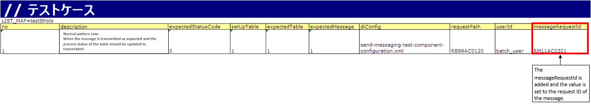
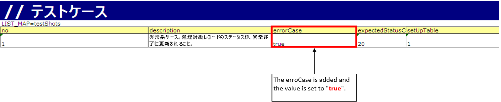

3.1.18. How to Conduct a Request Unit Test (Sending Asynchronous Message Process)¶
3.1.18.1. Summary¶
Action classes for processing sending asynchronous messages are provided as part of Nablarch. For this reason, the request unit test uses this action class to check the Deliverables to be tested given below.
* Unlike other processes, it is not necessary to cover the conditions for action classes or perform limit value tests.
3.1.18.1.1. Deliverables to be tested¶
- Format definition file that defines the message layout
- Three types of SQL statements
- SELECT statement for acquiring data with not sent status from the send message table
- UPDATE statement to update the status of the relevant data to processed after the message is sent
- UPDATE statement for updating the status of the relevant data to send failure (error) when the message send fails
3.1.18.2. How to write a test class¶
The test class should be created in such a way that the following conditions are met.
- The package of the test class is the package of the function to be tested.
- Create a test class with the class name <request ID of the message> RequestTest.
- Inherits
nablarch.test.core.batch.BatchRequestTestSupport.
For example, if the package of the function to be tested is nablarch.sample.ss21AA and request ID of the message is RM11AC0301, the test class will be as follows.
package nablarch.sample.ss21AA;
// ~ Middle is omitted ~
public class RM11AC0301RequestTest extends BatchRequestTestSupport {
3.1.18.3. How to write test data¶
This section explains how to describe the test data required to test the Deliverables to be tested.
Refer to How to Execute a Request Unit Test (Sending Synchronous Message Process) for details on how to write test data. In this section, the differences in the description method with How to Execute a Request Unit Test (Sending Synchronous Message Process) are explained.
3.1.18.3.1. The expected value of the request message and the preparation of the response message to be returned¶
In the process of sending Asynchronous a message that does not require a response, there is no need to confirm that the response message is as expected because there is no response message.
For this reason, The following settings are not required.
- testShots definition
- responseMessage
- Definition of expected value and preparation data
- RESPONSE_HEADER_MESSAGES
- RESPONSE_BODY_MESSAGES
3.1.18.3.1.1. Normal pattern test¶
Check of case in which the message is sent correctly.This case checks that the message is sent and confirms the status update of the relevant data.The action class for processing sending asynchronous message requests the request ID of the message as a startup parameter.“KEY = messageRequestId” and “VALUE = message request ID” are required to be added to the definition of “testShots” as shown in the following image.
{kind=link}
3.1.18.3.1.2. Abnormal pattern test(Failure pattern test)¶
Abnormal pattern testing is necessary to check UPDATE statements that update the status of the relevant data to an error when message sending fails.To execute the test case, add “KEY = errorCase” and “VALUE = true” to the definition of “testShots” as shown in the following image.The expected value of the sent message is not required to be set as no message is sent in the abnormal pattern case.Tip
When an abnormal pattern test case is executed, it is necessary to switch the common action for sending asynchronous message to the action for testing. A configuration example is shown below.
Production configuration example
<!--Dispatch handler--> <component name="requestPathJavaPackageMapping" class="nablarch.fw.handler.RequestPathJavaPackageMapping"> <!-- Configure common actions to process sending asynchronous message. --> <property name="basePackage" value="nablarch.fw.messaging.action.AsyncMessageSendAction" /> <property name="immediate" value="false" /> </component>Test configuration
Overwrite the above configuration of production environment with the action class for testing.
<!--Dispatch handler--> <component name="requestPathJavaPackageMapping" class="nablarch.fw.handler.RequestPathJavaPackageMapping"> <property name="basePackage" value="nablarch.test.core.messaging.AsyncMessageSendActionForUt" /> <property name="immediate" value="false" /> </component>
{kind=link}